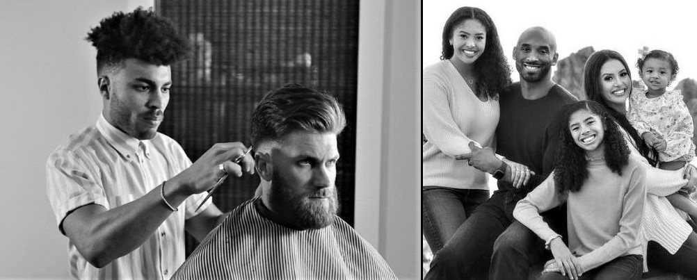

BLOG SINGLE POST
WHY I GREW A MUSTACHE
Our website templates are created with inspiration, checked for quality and originality and meticulously sliced and coded. What’s more, they’re absolutely free! You can do a lot with them. You can modify them. You can use them to design websites for clients, so long as you agree with the Terms of Use. You can even remove all our links if you want to.
Looking for more templates? Just browse through all our Free Website Templates and find what you’re looking for. But if you don’t find any website template you can use, you can try our Free Web Design service and tell us all about it. Maybe you’re looking for something different, something special. And we love the challenge of doing something different and something special.
If you’re experiencing issues and concerns about this website template, join the discussion on on our forum and meet other people in the community who share the same interests with you.
Design version 2. Code version 1. Website Template details, discussion and updates for this Mustache Enthusiast Website Template. Website Template design by Free Website Templates. Please feel free to remove some or all the text and links of this page and replace it with your own About content.